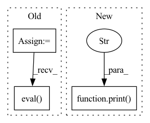

Pattern ID :34605

Before Change
root_logger.info("Finished training......")
elif FLAGS.mode == "eval":
root_logger.info("Start evaluating......")
learned_model = torch.load(FLAGS.checkpoint_dir + "model_checkpoint.pth")
learned_model.to(device)
learned_model.eval()
model = params["model"].Model(params, learned_model, output_normalizer)
model.to(device)
model.eval()
evaluator(params, model)
"""
prefix = "learned_model."
n_clip = len(prefix)
After Change
model.to(device)
model.evaluate()
evaluator(params, model)
print("Finished all......")
end = time.time()
end_datetime = datetime.datetime.fromtimestamp(end).strftime("%c")
root_logger.info("Program ended at time " + end_datetime)
root_logger.info("Finished FLAGS.mode " + FLAGS.mode)
In pattern: SUPERPATTERN
Frequency: 3
Non-data size: 3
Instances
Fragment ID: 99430127
Project Name: wwmark/meshgraphnets
Commit Name: dbc8d94b0f2c4020e69f89df4e54ef278aa588c4
Time: 2021-09-18
Author: ruoheng.ma@gmail.com
File Name: run_model.py
M Class Name: AnonimousClass
N Class Name: AnonimousClass
M Method Name: main(1)
N Method Name: main(1)
M Parent Class:
N Parent Class:
M File Name: run_model.py
N File Name: run_model.py
M Start Line: 263
M End Line: 341
N Start Line: 297
N End Line: 333
'>
Before Change
self.wf = self.wf.eval()
pos = self.sample()
self.wf = self.wf.train()
exit()
//pos = torch.rand(self.sampler.nwalkers,self.wf.ndim*self.wf.nelec)
dataset = QMC_DataSet(pos)
dataloader = DataLoader(dataset,batch_size=self.batchsize)
qmc_loss = QMCLoss(self.wf,method="energy")
cumulative_loss = []
for n in range(nepoch):
print("epoch %d" %n)
cumulative_loss.append(0)
for data in dataloader:
data = Variable(data.transpose(0,1)).float()
out = self.wf(data)
t0 = time.time()
self.wf = self.wf.eval()
print("WF done in %f" %(time.time()-t0))
t0 = time.time()
loss = qmc_loss(out,data)
After Change
cumulative_loss.append(0)
for data in dataloader:
print("\n data ", data.shape)
data = Variable(data).float()
t0 = time.time()
out = self.wf(data)
'>
Fragment ID: 99430132
Project Name: nlesc-jcer/qmctorch
Commit Name: 3dd6974f914a3d22ee620c2359808489d7f573a0
Time: 2019-05-13
Author: nicolas.gm.renaud@gmail.com
File Name: pyCHAMP/solver/neural_net.py
M Class Name: NN4PYSCF
N Class Name: NN4PYSCF
M Method Name: train(2)
N Method Name: train(2)
M Parent Class: SOLVER_BASE
N Parent Class: SOLVER_BASE
M File Name: pyCHAMP/solver/neural_net.py
N File Name: pyCHAMP/solver/neural_net.py
M Start Line: 111
M End Line: 138
N Start Line: 117
N End Line: 136
'>
Before Change
// cli function for ensemble prediction with pre-trained network
//@torch.no_grad()
def get_ensembled_predictions(input_file, output_file=None, model_dir="models/trRosetta_models"):
structure_model = trRosettaNetwork()
input_data = preprocess(msa_file = input_file)
//input_data = preprocess(use_random_seq = True)
if output_file is None:
input_path = Path(input_file)
output_file = f"{input_path.parents[0] / input_path.stem}.npz"
outputs = []
for model_file in load_models(model_dir):
structure_model.load_state_dict(torch.load(model_file, map_location=torch.device(d())))
structure_model.to(d()).eval()
output = structure_model(input_data) //prob_theta, prob_phi, prob_distance, prob_omega
outputs.append(output)
averaged_outputs = [torch.stack(model_output).mean(dim=0).cpu().detach().numpy() for model_output in zip(*outputs)]
After Change
]
output_dict = dict(zip(["theta", "phi", "dist", "omega"], averaged_outputs))
np.savez_compressed(output_path, **output_dict)
print(f"predictions for {input_path} saved to {output_path}")
utils.plot_distogram(
utils.distogram_distribution_to_distogram(output_dict["dist"]),
f"{input_file}_dist.jpg",
'>
Fragment ID: 99430128
Project Name: learn-ventures/trdesign-pytorch
Commit Name: 016e89447408c7bc3682a4326ac3747077027d56
Time: 2021-03-16
Author: lev@learn.ventures
File Name: src/predict.py
M Class Name: AnonimousClass
N Class Name: AnonimousClass
M Method Name: get_ensembled_predictions(2)
N Method Name: get_ensembled_predictions(3)
M Parent Class:
N Parent Class:
M File Name: src/predict.py
N File Name: src/predict.py
M Start Line: 6
M End Line: 27
N Start Line: 20
N End Line: 43